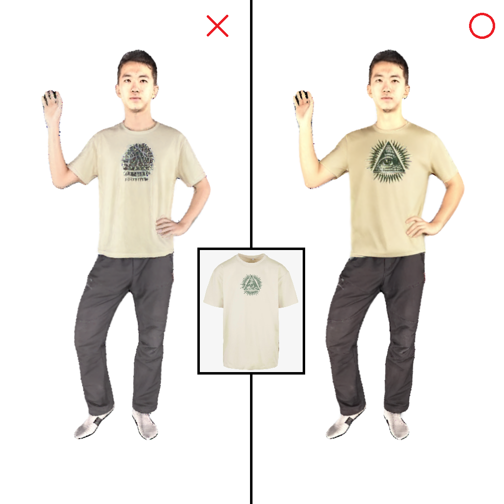
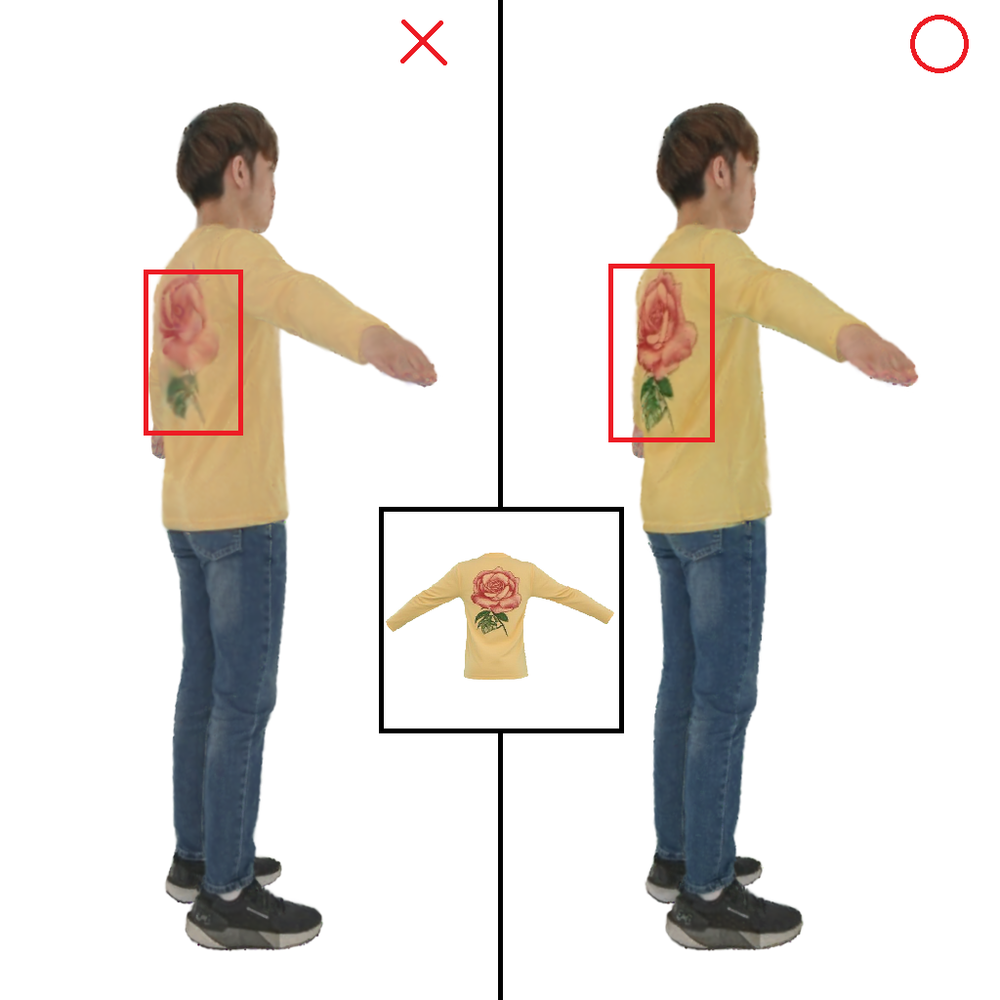
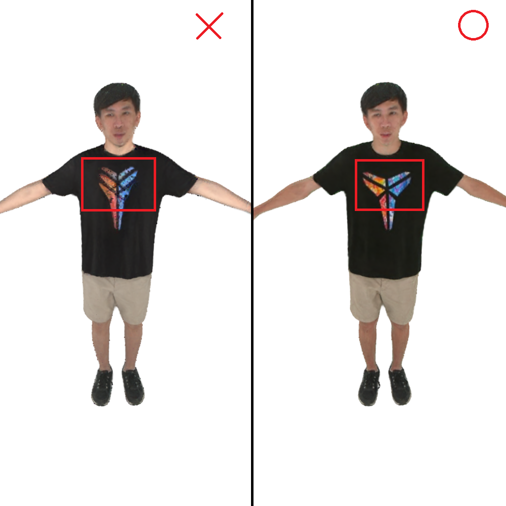

要換上的衣服參考圖
GROUP 01 / 70
USER STUDY
接下來你會看到 30 組結果。每一組包含: 2 張要換上的衣服正反面照片,4 部換裝後的3DGS旋轉展示影片 ，以及4張由六個視角組成的大圖。影片會環繞人物旋轉上、中、下三圈，這 4 部影片是由不同方法產生的, 但畫面上只會標示 A BCD, 不會告訴你各自使用了什麼方法。
請仔細觀看 4 部影片或4張大圖後,並依需求自行放大、暫停、調整撥放進度, 接著依據每一題的問題,選出你認為表現最好的一部影片。 每一組會有 3 個小問題,全部回答後按「下一組」即可繼續。
1.哪一個影片的服裝花紋／版型與參考服裝圖片最一致?
• 請注意衣服的圖案、花紋、顏色、版型等細節,判斷是否與參考服裝一致。
2.哪一個影片在旋轉呈現時最穩定、瑕疵最少?
• 請著重觀察側面視角、仰視、俯視等角度，觀察圖案是否閃爍或陷入衣服內。
3.綜合來看,認為整體表現最好的結果?
• 請選擇你認為整體表現最好的結果，不需要與前兩題的答案相同。
載入影片可能需要一些時間，作答途中請不要重新整理頁面,已送出的組別無法回頭修改,請確認後再進入下一題。
常見的「不好」範例參考
以下是幾種常見的瑕疵示意,幫助你判斷「多視角穩定性」與「服裝一致性」時有更明確的參考標準:



(以上僅為範例示意,實際作答請以每組影片實際呈現為準)